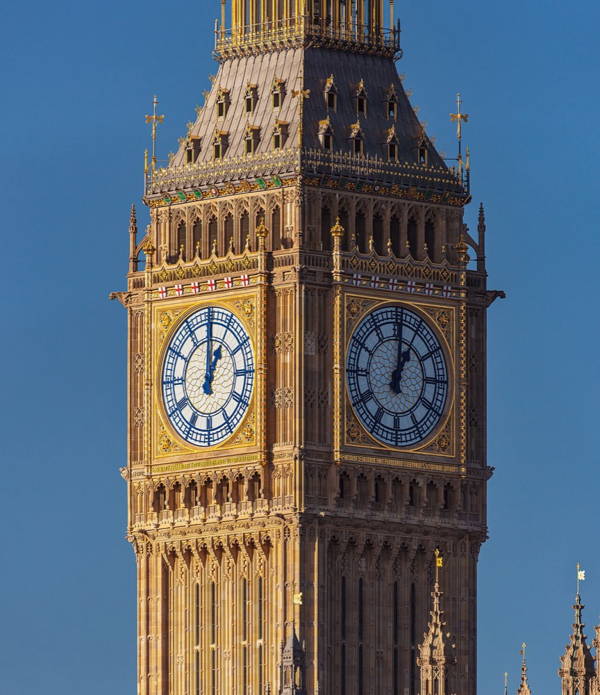

Великобритания

Британия — это про характер, а характер в рекламе не показывают. Первый Лондон: Sky Garden за бесплатной высотой (бронь за неделю), рынок Боро на завтрак, вечер на Саутбэнке под фонарями, где Темза ведёт себя как кино. Метро с Oyster-картой вы освоите за день, а Британский музей — бесплатный и всегда: от Розеттского камня до мумий, под которыми дети залипают часами. За городом — Эдинбург: замок на базальтовой скале и Ройал-Майл, идущая сверху вниз, как лестница истории; Хайлендс с озёрами и одиночеством в подарок; Йорк — ради собора, Оксфорд — ради колледжей. Погода не повод для обиды: возьмите плащ, сядьте на верхний этаж двухэтажного автобуса и смотрите город сквозь стекло — через час вы уже играете на его инструменте. Чай в четыре — ритуал, а не клише. За городом не забудьте Котсуолдс — мёдовые каменные деревни, где время идёт пешком. Британия отдаёт вам жанр и словарь к нему.
Что знать перед поездкой
- Sky Garden — бесплатный вид с крыши
- Oyster Card — метро проще всего
- Чай в четыре — ритуал, не клише